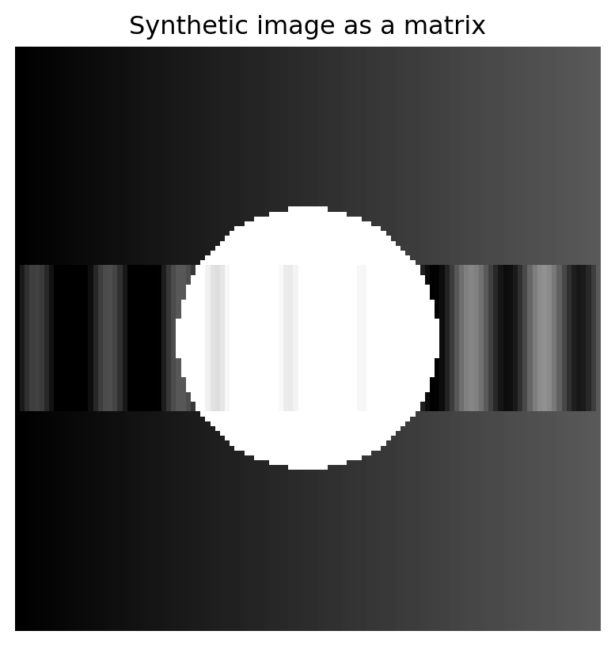

How a picture becomes a few important matrix layers
17.1 Opening story: a picture made of too many numbers
A photograph looks like one object.
To a computer, it is not one object. It is a table of numbers.
A grayscale image with \(1000\) rows and \(1000\) columns is a matrix with
\[
1000 \times 1000 = 1{,}000{,}000
\]
entries. A color image has three such matrices, one for red, one for green, and one for blue.
That sounds enormous. But pictures are not usually random. A sky changes slowly from one pixel to the next. A face has broad regions of light and shadow. A handwritten digit has a background, a stroke, and a boundary. A medical image may contain smooth tissue regions and a few important edges.
So an image may contain many numbers but fewer meaningful patterns.
This chapter asks a practical question:
Can we keep the visible structure of an image while storing many fewer numbers?
The answer is yes, and the tool is the singular value decomposition.
In Chapter 16, the SVD showed us that every matrix can be decomposed into ordered rank-one layers:
For images, each rank-one matrix \(u_iv_i^T\) is a simple visual layer, and the singular value \(\sigma_i\) tells us how important that layer is.
The central message of this chapter is:
Image compression is controlled information loss. We intentionally discard small layers while keeping the strongest visible structure.
This is not only a trick for pictures. It is one of the main ideas behind modern data compression, denoising, dimensionality reduction, recommendation systems, and machine learning.
17.2 Learning goals
By the end of this chapter, you should be able to:
Interpret a grayscale image as a matrix and a color image as three matrices.
Explain why many images have approximate low-rank structure.
Use the SVD to build the rank-\(k\) approximation \(A_k\).
Interpret singular values as ordered importance levels.
Compare image quality, reconstruction error, and storage cost as \(k\) changes.
Explain why the truncated SVD gives the best rank-\(k\) approximation.
Use Python to compress, denoise, and visualize images.
Connect image compression to PCA, denoising, latent structure, and AI.
17.3 17.1 Images as matrices
A grayscale image is a matrix.
Each matrix entry stores the brightness of one pixel. For example,
represents a tiny bright square on a dark background.
In many image files, pixel brightness may be stored between \(0\) and \(255\). In mathematical and Python examples, it is often more convenient to scale brightness into the interval \([0,1]\).
NoteMatrix view of a grayscale image
If \(A \in \mathbb{R}^{m\times n}\) is a grayscale image, then:
\(m\) is the number of rows of pixels,
\(n\) is the number of columns of pixels,
\(A_{ij}\) is the brightness at row \(i\) and column \(j\).
A color image is usually stored as three matrices:
\[
A^{(R)}, \qquad A^{(G)}, \qquad A^{(B)}.
\]
The first stores red intensity, the second stores green intensity, and the third stores blue intensity. In this chapter, we focus mostly on grayscale images because the essential linear algebra is already visible there.
17.4 17.2 Why images can be compressed
A completely random matrix is hard to compress. Every pixel is unrelated to every other pixel. If we discard information, the image quickly becomes meaningless.
Natural images are different. They contain structure:
neighboring pixels are often similar;
large regions may be smooth;
edges and boundaries often form coherent curves;
many visual patterns repeat;
noise is often weaker than the main signal.
This structure means the image matrix may be well approximated by a low-rank matrix.
ImportantApproximate low rank
An image matrix \(A\) may have high rank exactly, but still be approximately low rank if most of its visible structure can be captured by a small number of SVD layers.
This distinction is essential.
Exact rank asks: How many layers are needed to reproduce every pixel perfectly?
Approximate rank asks: How many layers are needed to reproduce the important visual structure?
For compression, approximate rank is often more important than exact rank.
17.5 17.3 Rank-one image layers
A rank-one matrix has the form
\[
uv^T.
\]
Here \(u\in \mathbb{R}^m\) is a column pattern and \(v\in \mathbb{R}^n\) is a row pattern. The entry in row \(i\) and column \(j\) is
\[
(uv^T)_{ij} = u_i v_j.
\]
This means a rank-one image is built by multiplying a vertical pattern by a horizontal pattern.
That may sound too simple to make a real image. But the SVD says that a complicated image can be built as a sum of simple rank-one image layers:
Each layer is simple. Together, they can create complex structure.
NoteVisual interpretation
A rank-one layer is like a transparent sheet placed over the image. The first sheet carries the strongest broad pattern. Later sheets add smaller corrections, details, edges, texture, and sometimes noise.
This is a useful numerical guide, but visual quality also depends on where the missing information appears.
17.7 17.5 Storage cost
Suppose \(A\in\mathbb{R}^{m\times n}\).
The full image stores
\[
mn
\]
numbers.
The rank-\(k\) SVD approximation stores:
\(k\) left singular vectors of length \(m\): \(mk\) numbers;
\(k\) right singular vectors of length \(n\): \(nk\) numbers;
\(k\) singular values: \(k\) numbers.
So the compressed representation stores approximately
\[
k(m+n+1)
\]
numbers.
Compression is worthwhile when
\[
k(m+n+1) < mn.
\]
For a \(1000\times 1000\) grayscale image, the full image stores \(1{,}000{,}000\) numbers. A rank-\(50\) approximation stores
\[
50(1000+1000+1)=100{,}050
\]
numbers, about one tenth as many.
WarningCompression is not free
Smaller \(k\) means fewer numbers, but also more information loss. The goal is not to make \(k\) as small as possible. The goal is to choose \(k\) so that the lost information is acceptable.
17.8 17.6 The best low-rank approximation theorem
The truncated SVD is not just a reasonable method. It is the best possible method for low-rank approximation under common error measures.
So the discarded singular values measure the lost energy.
Proof (Proof idea). The full proof is deeper than what we need here, but the main intuition is clear.
The SVD writes the matrix in orthogonal rank-one directions. Because these directions are orthogonal under the Frobenius inner product, the squared error behaves like a Pythagorean sum. Keeping the largest \(k\) singular values removes the least possible squared energy.
This is the same principle behind projection: to approximate a vector using a subspace, keep the components in the most important orthogonal directions and discard the rest.
17.9 17.7 Compression as projection
There is a close connection between image compression and projection.
When we compute \(A_k\), we are projecting the matrix \(A\) onto the set of matrices built from the first \(k\) singular directions:
\[
A_k = U_kU_k^T A V_kV_k^T.
\]
This formula says:
keep only the important left-side image patterns;
keep only the important right-side image patterns;
remove everything outside those patterns.
The SVD does not merely reduce numbers. It chooses a coordinate system adapted to the image.
17.10 17.8 Denoising by discarding small layers
Suppose an observed image is
\[
A_{\text{noisy}} = A_{\text{true}} + N,
\]
where \(N\) is noise.
If the true image has strong organized structure and the noise is spread across many weak directions, then the largest singular values may mostly represent the true image, while smaller singular values may represent noise.
A truncated SVD can therefore denoise the image:
\[
A_{\text{denoised}} = (A_{\text{noisy}})_k.
\]
WarningDenoising requires judgment
Small singular values often contain noise, but they can also contain fine details. If \(k\) is too small, denoising becomes oversmoothing.
17.11 17.9 Color images
For color images, we can apply SVD separately to the red, green, and blue channels:
Then we combine the three approximated channels back into a color image.
This method is simple and instructive. More advanced image-compression methods, such as JPEG, use different bases and additional encoding ideas, but the central principle is similar:
transform the image into meaningful coordinates, keep the important coefficients, and discard or compress the smaller ones.
17.12 17.10 Python: synthetic image compression
Code
import numpy as npimport matplotlib.pyplot as plt# Build a synthetic grayscale imagen =120x = np.linspace(-1, 1, n)y = np.linspace(-1, 1, n)X, Y = np.meshgrid(x, y)circle = (X**2+ Y**2<0.45**2).astype(float)gradient =0.35* (X +1) /2stripe =0.25* np.sin(8*np.pi*X) * (np.abs(Y) <0.25)A = np.clip(circle + gradient + stripe, 0, 1)plt.figure(figsize=(5,5))plt.imshow(A, cmap="gray", vmin=0, vmax=1)plt.axis("off")plt.title("Synthetic image as a matrix")plt.show()

Compute the SVD:
Code
U, s, Vt = np.linalg.svd(A, full_matrices=False)plt.figure(figsize=(6,4))plt.plot(s, marker="o")plt.title("Singular values")plt.xlabel("Index")plt.ylabel("Singular value")plt.grid(True)plt.show()
m, n = A.shapefull_storage = m*nfor k in [1, 3, 5, 10, 20, 40]: compressed_storage = k*(m+n+1) energy = np.sum(s[:k]**2) / np.sum(s**2)print(f"k={k:2d}: storage ratio={compressed_storage/full_storage:.3f}, energy={energy:.3f}")
So the first two layers capture about \(91.4\%\) of the squared energy.
17.14 17.12 Common misunderstandings
17.14.1 Misunderstanding 1: low rank means simple-looking
A rank-one image is simple. But a low-rank image with \(k=30\) or \(k=50\) can look visually rich. Low-rank does not mean boring. It means the image can be built from a relatively small number of organized layers.
17.14.2 Misunderstanding 2: high energy always means high visual quality
Energy is useful, but human perception is not exactly Frobenius norm. A small error near an important edge may be more visible than a larger error in a smooth background.
17.14.3 Misunderstanding 3: compression and denoising are the same
They are related but not identical. Compression aims to store fewer numbers. Denoising aims to remove unwanted variation. SVD truncation can do both, but the best \(k\) for compression may differ from the best \(k\) for denoising.
17.15 17.13 Practice problems
17.15.1 Problem 1
A \(500\times 500\) grayscale image is approximated using rank \(k=20\). How many numbers are stored in the SVD representation? What fraction of the original storage is this?
Solution. The full image stores
\[
500\cdot 500 = 250{,}000
\]
numbers.
The rank-\(20\) SVD approximation stores
\[
20(500+500+1)=20{,}020
\]
numbers.
The storage fraction is
\[
\frac{20{,}020}{250{,}000}\approx 0.0801.
\]
So it uses about \(8.0\%\) of the original storage.
17.15.2 Problem 2
Suppose the singular values of an image matrix are
\[
12, 5, 2, 1, 0.5.
\]
Find the Frobenius error of the rank-\(2\) approximation.
Solution. The discarded singular values are \(2,1,0.5\). Therefore
\[
\|A-A_2\|_F^2 = 2^2+1^2+0.5^2 = 5.25.
\]
So
\[
\|A-A_2\|_F = \sqrt{5.25}\approx 2.291.
\]
17.15.3 Problem 3
Explain why keeping the first \(k\) singular values is better than keeping \(k\) randomly chosen singular values.
Solution. The singular values are ordered from largest to smallest. The largest singular values carry the most Frobenius energy. By the Eckart–Young theorem, keeping the first \(k\) singular values gives the best rank-\(k\) approximation. Randomly chosen singular values may discard large important layers and keep smaller less important layers.
17.15.4 Problem 4
Why might a rank-\(20\) approximation look good for one image but poor for another image of the same size?
Solution. Different images have different singular value patterns. If the singular values decay quickly, a small \(k\) captures most structure. If they decay slowly, important information is spread across many layers, so a larger \(k\) is needed. Smooth images often compress better than highly textured or random images.
17.15.5 Problem 5
Let \(A\in\mathbb{R}^{m\times n}\). Show that the rank-\(k\) SVD storage is smaller than full storage exactly when
\[
k < \frac{mn}{m+n+1}.
\]
Solution. Full storage is \(mn\). Rank-\(k\) SVD storage is \(k(m+n+1)\). Compression requires
\[
k(m+n+1)<mn.
\]
Dividing by \(m+n+1>0\) gives
\[
k<\frac{mn}{m+n+1}.
\]
17.16 17.14 Challenge problems
17.16.1 Challenge 1: visual quality versus error
Find or create two different images with the same Frobenius reconstruction error after rank-\(k\) approximation. Do they look equally good? Explain why or why not.
17.16.2 Challenge 2: denoising threshold
Add Gaussian noise to a simple image. Try several values of \(k\). Find a value of \(k\) that removes noise while preserving the main structure. Explain how you chose it.
17.16.3 Challenge 3: color compression
Apply SVD compression separately to the red, green, and blue channels of a color image. Compare the result with grayscale compression.
17.16.4 Challenge 4: adversarial image
Create an image that is difficult to compress with low-rank SVD. What visual features make it difficult?
17.17 17.15 AI companion activities
Use an AI assistant as a mathematical conversation partner.
Ask it to explain the difference between exact rank and approximate rank using an image example.
Ask it to create three examples of images whose singular values decay quickly, moderately, and slowly.
Ask it to compare SVD image compression with JPEG compression at a conceptual level.
Ask it to generate Python code that compresses an RGB image channel-by-channel.
Ask it to explain why the Frobenius error is determined by discarded singular values.
Ask it to critique your choice of \(k\) for an image-compression experiment.
17.18 Chapter summary
A digital image is a matrix of pixel values. The SVD decomposes that matrix into ordered rank-one layers:
\[
A = \sum_{i=1}^r \sigma_i u_i v_i^T.
\]
The rank-\(k\) approximation keeps only the first \(k\) layers:
\[
A_k = \sum_{i=1}^k \sigma_i u_i v_i^T.
\]
This creates compression because \(A_k\) can be stored using about
\[
k(m+n+1)
\]
numbers instead of \(mn\) numbers.
The singular values measure importance. The discarded singular values measure error:
\[
\|A-A_k\|_F^2 = \sum_{i=k+1}^r \sigma_i^2.
\]
The deeper lesson is that compression is not merely about making files smaller. It is about discovering structure, choosing what matters, and understanding what is lost.
In the next chapter, we will see the same idea from the perspective of data clouds: PCA uses SVD to find the most important directions of variation in data.
Source Code
---title: "Chapter 17: Image Compression"subtitle: "How a picture becomes a few important matrix layers"format: html: toc: true toc-depth: 3 number-sections: true code-fold: true code-tools: truejupyter: python3---## Opening story: a picture made of too many numbersA photograph looks like one object.To a computer, it is not one object. It is a table of numbers.A grayscale image with $1000$ rows and $1000$ columns is a matrix with$$1000 \times 1000 = 1{,}000{,}000$$entries. A color image has three such matrices, one for red, one for green, and one for blue.That sounds enormous. But pictures are not usually random. A sky changes slowly from one pixel to the next. A face has broad regions of light and shadow. A handwritten digit has a background, a stroke, and a boundary. A medical image may contain smooth tissue regions and a few important edges.So an image may contain many numbers but fewer meaningful patterns.This chapter asks a practical question:> Can we keep the visible structure of an image while storing many fewer numbers?The answer is yes, and the tool is the singular value decomposition.In Chapter 16, the SVD showed us that every matrix can be decomposed into ordered rank-one layers:$$A = \sigma_1 u_1v_1^T + \sigma_2u_2v_2^T + \cdots + \sigma_r u_rv_r^T.$$For images, each rank-one matrix $u_iv_i^T$ is a simple visual layer, and the singular value $\sigma_i$ tells us how important that layer is.The central message of this chapter is:> **Image compression is controlled information loss.** We intentionally discard small layers while keeping the strongest visible structure.This is not only a trick for pictures. It is one of the main ideas behind modern data compression, denoising, dimensionality reduction, recommendation systems, and machine learning.## Learning goalsBy the end of this chapter, you should be able to:1. Interpret a grayscale image as a matrix and a color image as three matrices.2. Explain why many images have approximate low-rank structure.3. Use the SVD to build the rank-$k$ approximation $A_k$.4. Interpret singular values as ordered importance levels.5. Compare image quality, reconstruction error, and storage cost as $k$ changes.6. Explain why the truncated SVD gives the best rank-$k$ approximation.7. Use Python to compress, denoise, and visualize images.8. Connect image compression to PCA, denoising, latent structure, and AI.## 17.1 Images as matricesA grayscale image is a matrix.Each matrix entry stores the brightness of one pixel. For example,$$A =\begin{bmatrix}0 & 0 & 0 & 0\\0 & 1 & 1 & 0\\0 & 1 & 1 & 0\\0 & 0 & 0 & 0\end{bmatrix}$$represents a tiny bright square on a dark background.In many image files, pixel brightness may be stored between $0$ and $255$. In mathematical and Python examples, it is often more convenient to scale brightness into the interval $[0,1]$.:::{.callout-note}## Matrix view of a grayscale imageIf $A \in \mathbb{R}^{m\times n}$ is a grayscale image, then:- $m$ is the number of rows of pixels,- $n$ is the number of columns of pixels,- $A_{ij}$ is the brightness at row $i$ and column $j$.:::A color image is usually stored as three matrices:$$A^{(R)}, \qquad A^{(G)}, \qquad A^{(B)}.$$The first stores red intensity, the second stores green intensity, and the third stores blue intensity. In this chapter, we focus mostly on grayscale images because the essential linear algebra is already visible there.## 17.2 Why images can be compressedA completely random matrix is hard to compress. Every pixel is unrelated to every other pixel. If we discard information, the image quickly becomes meaningless.Natural images are different. They contain structure:- neighboring pixels are often similar;- large regions may be smooth;- edges and boundaries often form coherent curves;- many visual patterns repeat;- noise is often weaker than the main signal.This structure means the image matrix may be well approximated by a low-rank matrix.:::{.callout-important}## Approximate low rankAn image matrix $A$ may have high rank exactly, but still be **approximately low rank** if most of its visible structure can be captured by a small number of SVD layers.:::This distinction is essential.Exact rank asks: *How many layers are needed to reproduce every pixel perfectly?*Approximate rank asks: *How many layers are needed to reproduce the important visual structure?*For compression, approximate rank is often more important than exact rank.## 17.3 Rank-one image layersA rank-one matrix has the form$$uv^T.$$Here $u\in \mathbb{R}^m$ is a column pattern and $v\in \mathbb{R}^n$ is a row pattern. The entry in row $i$ and column $j$ is$$(uv^T)_{ij} = u_i v_j.$$This means a rank-one image is built by multiplying a vertical pattern by a horizontal pattern.That may sound too simple to make a real image. But the SVD says that a complicated image can be built as a sum of simple rank-one image layers:$$A = \sigma_1u_1v_1^T + \sigma_2u_2v_2^T + \cdots + \sigma_ru_rv_r^T.$$Each layer is simple. Together, they can create complex structure.:::{.callout-note}## Visual interpretationA rank-one layer is like a transparent sheet placed over the image. The first sheet carries the strongest broad pattern. Later sheets add smaller corrections, details, edges, texture, and sometimes noise.:::## 17.4 The rank-$k$ approximationThe rank-$k$ truncated SVD of $A$ is$$A_k = \sigma_1u_1v_1^T + \sigma_2u_2v_2^T + \cdots + \sigma_ku_kv_k^T.$$Instead of keeping all $r$ layers, we keep only the first $k$ layers.If $k=1$, the approximation is very simple.If $k$ is larger, the approximation becomes more detailed.If $k=r$, then $A_k=A$ exactly.The compression idea is:> Choose $k$ much smaller than $r$, but large enough that $A_k$ still looks like the original image.### Worked example: a small matrixSuppose an image matrix has singular values$$10, \quad 4, \quad 1, \quad 0.2, \quad 0.05.$$The first singular value is much larger than the later ones. The first few layers likely capture most of the image energy.The total squared energy is$$10^2 + 4^2 + 1^2 + 0.2^2 + 0.05^2.$$If we keep only the first two layers, the captured energy ratio is$$\frac{10^2+4^2}{10^2+4^2+1^2+0.2^2+0.05^2}.$$This tells us how much of the squared Frobenius norm is retained.:::{.callout-tip}## Energy ratioThe energy captured by the first $k$ singular values is$$\frac{\sigma_1^2+\cdots+\sigma_k^2}{\sigma_1^2+\cdots+\sigma_r^2}.$$This is a useful numerical guide, but visual quality also depends on where the missing information appears.:::## 17.5 Storage costSuppose $A\in\mathbb{R}^{m\times n}$.The full image stores$$mn$$numbers.The rank-$k$ SVD approximation stores:- $k$ left singular vectors of length $m$: $mk$ numbers;- $k$ right singular vectors of length $n$: $nk$ numbers;- $k$ singular values: $k$ numbers.So the compressed representation stores approximately$$k(m+n+1)$$numbers.Compression is worthwhile when$$k(m+n+1) < mn.$$For a $1000\times 1000$ grayscale image, the full image stores $1{,}000{,}000$ numbers. A rank-$50$ approximation stores$$50(1000+1000+1)=100{,}050$$numbers, about one tenth as many.:::{.callout-warning}## Compression is not freeSmaller $k$ means fewer numbers, but also more information loss. The goal is not to make $k$ as small as possible. The goal is to choose $k$ so that the lost information is acceptable.:::## 17.6 The best low-rank approximation theoremThe truncated SVD is not just a reasonable method. It is the best possible method for low-rank approximation under common error measures.:::{.callout-important}## Eckart--Young theoremLet$$A = U\Sigma V^T$$be the SVD of $A$, with singular values$$\sigma_1\geq \sigma_2\geq \cdots \geq \sigma_r >0.$$Among all matrices $B$ with rank at most $k$, the truncated SVD approximation$$A_k = \sum_{i=1}^k \sigma_i u_i v_i^T$$minimizes both$$\|A-B\|_F$$and$$\|A-B\|_2.$$:::The theorem says:> If you are allowed to keep only $k$ matrix layers, the SVD tells you the best $k$ layers to keep.The Frobenius error has a simple formula:$$\|A-A_k\|_F^2 = \sigma_{k+1}^2+\sigma_{k+2}^2+\cdots+\sigma_r^2.$$So the discarded singular values measure the lost energy.:::{.proof collapse="true"}## Proof ideaThe full proof is deeper than what we need here, but the main intuition is clear.The SVD writes the matrix in orthogonal rank-one directions. Because these directions are orthogonal under the Frobenius inner product, the squared error behaves like a Pythagorean sum. Keeping the largest $k$ singular values removes the least possible squared energy.This is the same principle behind projection: to approximate a vector using a subspace, keep the components in the most important orthogonal directions and discard the rest.:::## 17.7 Compression as projectionThere is a close connection between image compression and projection.When we compute $A_k$, we are projecting the matrix $A$ onto the set of matrices built from the first $k$ singular directions:$$A_k = U_kU_k^T A V_kV_k^T.$$This formula says:1. keep only the important left-side image patterns;2. keep only the important right-side image patterns;3. remove everything outside those patterns.The SVD does not merely reduce numbers. It chooses a coordinate system adapted to the image.## 17.8 Denoising by discarding small layersSuppose an observed image is$$A_{\text{noisy}} = A_{\text{true}} + N,$$where $N$ is noise.If the true image has strong organized structure and the noise is spread across many weak directions, then the largest singular values may mostly represent the true image, while smaller singular values may represent noise.A truncated SVD can therefore denoise the image:$$A_{\text{denoised}} = (A_{\text{noisy}})_k.$$:::{.callout-warning}## Denoising requires judgmentSmall singular values often contain noise, but they can also contain fine details. If $k$ is too small, denoising becomes oversmoothing.:::## 17.9 Color imagesFor color images, we can apply SVD separately to the red, green, and blue channels:$$A^{(R)} \approx A^{(R)}_k, \qquadA^{(G)} \approx A^{(G)}_k, \qquadA^{(B)} \approx A^{(B)}_k.$$Then we combine the three approximated channels back into a color image.This method is simple and instructive. More advanced image-compression methods, such as JPEG, use different bases and additional encoding ideas, but the central principle is similar:> transform the image into meaningful coordinates, keep the important coefficients, and discard or compress the smaller ones.## 17.10 Python: synthetic image compression```{python}import numpy as npimport matplotlib.pyplot as plt# Build a synthetic grayscale imagen =120x = np.linspace(-1, 1, n)y = np.linspace(-1, 1, n)X, Y = np.meshgrid(x, y)circle = (X**2+ Y**2<0.45**2).astype(float)gradient =0.35* (X +1) /2stripe =0.25* np.sin(8*np.pi*X) * (np.abs(Y) <0.25)A = np.clip(circle + gradient + stripe, 0, 1)plt.figure(figsize=(5,5))plt.imshow(A, cmap="gray", vmin=0, vmax=1)plt.axis("off")plt.title("Synthetic image as a matrix")plt.show()```Compute the SVD:```{python}U, s, Vt = np.linalg.svd(A, full_matrices=False)plt.figure(figsize=(6,4))plt.plot(s, marker="o")plt.title("Singular values")plt.xlabel("Index")plt.ylabel("Singular value")plt.grid(True)plt.show()```Build rank-$k$ approximations:```{python}def rank_k_approx(U, s, Vt, k):return (U[:, :k] * s[:k]) @ Vt[:k, :]ks = [1, 3, 5, 10, 20, 40]plt.figure(figsize=(12, 8))for i, k inenumerate(ks, 1): Ak = rank_k_approx(U, s, Vt, k) plt.subplot(2, 3, i) plt.imshow(Ak, cmap="gray", vmin=0, vmax=1) plt.axis("off") plt.title(f"rank {k}")plt.tight_layout()plt.show()```Compute storage and energy:```{python}m, n = A.shapefull_storage = m*nfor k in [1, 3, 5, 10, 20, 40]: compressed_storage = k*(m+n+1) energy = np.sum(s[:k]**2) / np.sum(s**2)print(f"k={k:2d}: storage ratio={compressed_storage/full_storage:.3f}, energy={energy:.3f}")```## 17.11 Worked examples### Example 1: storage thresholdA grayscale image has size $800\times 600$. For what values of $k$ does rank-$k$ SVD storage use fewer numbers than the original image?The full image stores$$800\cdot 600 = 480{,}000$$numbers.The rank-$k$ approximation stores$$k(800+600+1)=1401k$$numbers.We need$$1401k < 480{,}000.$$Thus$$k < \frac{480{,}000}{1401}\approx 342.6.$$So $k\leq 342$ gives storage savings.### Example 2: Frobenius errorSuppose the singular values of an image matrix are$$9, \quad 6, \quad 3, \quad 1, \quad 1.$$The squared error of the rank-$2$ approximation is$$3^2+1^2+1^2 = 11.$$So$$\|A-A_2\|_F = \sqrt{11}.$$### Example 3: energy capturedThe energy captured by the rank-$2$ approximation is$$\frac{9^2+6^2}{9^2+6^2+3^2+1^2+1^2}= \frac{117}{128}\approx 0.914.$$So the first two layers capture about $91.4\%$ of the squared energy.## 17.12 Common misunderstandings### Misunderstanding 1: low rank means simple-lookingA rank-one image is simple. But a low-rank image with $k=30$ or $k=50$ can look visually rich. Low-rank does not mean boring. It means the image can be built from a relatively small number of organized layers.### Misunderstanding 2: high energy always means high visual qualityEnergy is useful, but human perception is not exactly Frobenius norm. A small error near an important edge may be more visible than a larger error in a smooth background.### Misunderstanding 3: compression and denoising are the sameThey are related but not identical. Compression aims to store fewer numbers. Denoising aims to remove unwanted variation. SVD truncation can do both, but the best $k$ for compression may differ from the best $k$ for denoising.## 17.13 Practice problems### Problem 1A $500\times 500$ grayscale image is approximated using rank $k=20$. How many numbers are stored in the SVD representation? What fraction of the original storage is this?:::{.solution collapse="true"}The full image stores$$500\cdot 500 = 250{,}000$$numbers.The rank-$20$ SVD approximation stores$$20(500+500+1)=20{,}020$$numbers.The storage fraction is$$\frac{20{,}020}{250{,}000}\approx 0.0801.$$So it uses about $8.0\%$ of the original storage.:::### Problem 2Suppose the singular values of an image matrix are$$12, 5, 2, 1, 0.5.$$Find the Frobenius error of the rank-$2$ approximation.:::{.solution collapse="true"}The discarded singular values are $2,1,0.5$. Therefore$$\|A-A_2\|_F^2 = 2^2+1^2+0.5^2 = 5.25.$$So$$\|A-A_2\|_F = \sqrt{5.25}\approx 2.291.$$:::### Problem 3Explain why keeping the first $k$ singular values is better than keeping $k$ randomly chosen singular values.:::{.solution collapse="true"}The singular values are ordered from largest to smallest. The largest singular values carry the most Frobenius energy. By the Eckart--Young theorem, keeping the first $k$ singular values gives the best rank-$k$ approximation. Randomly chosen singular values may discard large important layers and keep smaller less important layers.:::### Problem 4Why might a rank-$20$ approximation look good for one image but poor for another image of the same size?:::{.solution collapse="true"}Different images have different singular value patterns. If the singular values decay quickly, a small $k$ captures most structure. If they decay slowly, important information is spread across many layers, so a larger $k$ is needed. Smooth images often compress better than highly textured or random images.:::### Problem 5Let $A\in\mathbb{R}^{m\times n}$. Show that the rank-$k$ SVD storage is smaller than full storage exactly when$$k < \frac{mn}{m+n+1}.$$:::{.solution collapse="true"}Full storage is $mn$. Rank-$k$ SVD storage is $k(m+n+1)$. Compression requires$$k(m+n+1)<mn.$$Dividing by $m+n+1>0$ gives$$k<\frac{mn}{m+n+1}.$$:::## 17.14 Challenge problems### Challenge 1: visual quality versus errorFind or create two different images with the same Frobenius reconstruction error after rank-$k$ approximation. Do they look equally good? Explain why or why not.### Challenge 2: denoising thresholdAdd Gaussian noise to a simple image. Try several values of $k$. Find a value of $k$ that removes noise while preserving the main structure. Explain how you chose it.### Challenge 3: color compressionApply SVD compression separately to the red, green, and blue channels of a color image. Compare the result with grayscale compression.### Challenge 4: adversarial imageCreate an image that is difficult to compress with low-rank SVD. What visual features make it difficult?## 17.15 AI companion activitiesUse an AI assistant as a mathematical conversation partner.1. Ask it to explain the difference between exact rank and approximate rank using an image example.2. Ask it to create three examples of images whose singular values decay quickly, moderately, and slowly.3. Ask it to compare SVD image compression with JPEG compression at a conceptual level.4. Ask it to generate Python code that compresses an RGB image channel-by-channel.5. Ask it to explain why the Frobenius error is determined by discarded singular values.6. Ask it to critique your choice of $k$ for an image-compression experiment.## Chapter summaryA digital image is a matrix of pixel values. The SVD decomposes that matrix into ordered rank-one layers:$$A = \sum_{i=1}^r \sigma_i u_i v_i^T.$$The rank-$k$ approximation keeps only the first $k$ layers:$$A_k = \sum_{i=1}^k \sigma_i u_i v_i^T.$$This creates compression because $A_k$ can be stored using about$$k(m+n+1)$$numbers instead of $mn$ numbers.The singular values measure importance. The discarded singular values measure error:$$\|A-A_k\|_F^2 = \sum_{i=k+1}^r \sigma_i^2.$$The deeper lesson is that compression is not merely about making files smaller. It is about discovering structure, choosing what matters, and understanding what is lost.In the next chapter, we will see the same idea from the perspective of data clouds: PCA uses SVD to find the most important directions of variation in data.